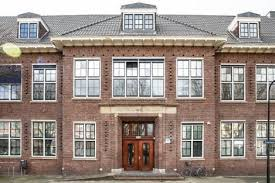

De eerste school waar ik mijn lessen volgde heet de Regenboog. Het was een christelijke basisschool. Ik herriner me eigenlijk niet zo veel van mijn tijd daar. Het was een hele lange tijd geleden. Het was een opleiding die me wel fijn voor mij was totdat ik wat mentale problemen kreeg. Het was daar rustign geordend en duidelijk. Alles werd daar goed uitgelegd. Maar ik heb daar volgens niet veel geleerd dat me zou kunnen helpen met mijn huidige opleiding behalve Nederlands en rekenen.
Daarna ging ik bij Yulius Dennehout in Barendrecht naar school. Dat was een speciale opleiding voor mensen die zulk soort dingen als autisme hebben. Ik vond het daar wel goed gaan. De klas was wel heel erg klein, maar het was wel rustig en geordend. Alls werd duidelijk uitgelegd. Maar ik had daar niks geleerd wat me met mijn opleiding zou kunnen helpen met mijn huidige opleiding behalve Nederlands en rekenen. Ik heb geen extra vaardigheden die me zouden kunnen helpen met mijn opleiding
Ik moest daarna weer van basisschool veranderen, deze keer naar Yulius de Wilgen, ook in Barendrecht. De opleiding leek volgens mij wel goed te gaan van wat ik me ervan nog herriner. Ik denk wel dat alles daar duidelijk werd uitgelegd, en het was wel rustig daar. Maar net zoals de vorige opleiding waren de enige dingen die me zouden kunnen helpen met mijn huidige opleiding Nederlands en rekenen
Nadat ik daar klaar was, ging ik naar Yulius het Tij toe voor middelbare school. De klassen waren op sommige punten een stuk minder rustig, dat lag meer aan de leerlingen. De leraren waren wel goed voor het grootste gedeelte en deden altijd hun best. Terwijl sommige leraren niet de beste waren (alhoewel dat meer leek te komen door miscommunicatie), vond ik het nog wel een goede opleiding, en bij de dingen die het fout ging ging hetuiteindelijk beter, omdat ze bijvoorbeeld wat betere leraren binnenkregen. Ik leerde daar mijn werktijden beter in te plannen, rust nemen wanneer het nodig is en een planning te maken voor wanneer ik moet gaan leren. Maar de enige vakken die ik daar had die me potentieel met deze opleiding zou kunnen helpen zijn wiskunde, engels en nederlands.
Startpagina | Mijn vooropleidingen | Mijn bijbanen | Ontwikkelpunten